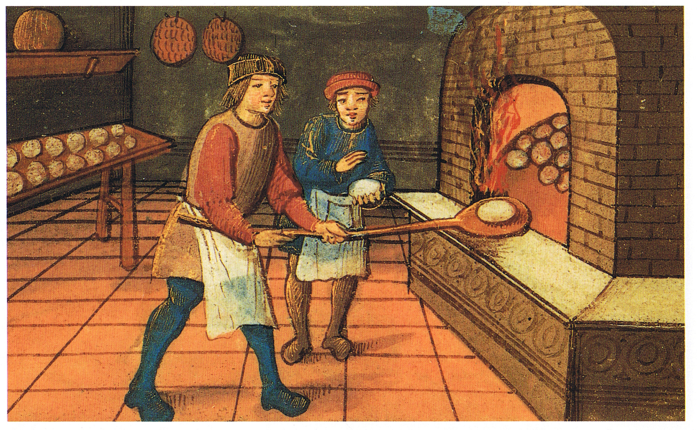

Om Bagning

En husholdning har brug for godt brød og øl, så derfor følger en opskrift
på dette!
Der skal bruges:
- Korn
- En husholder til at lave brødet
- Vand til brødet og husholderen
Fremgangsmåde
-
Mal først dit mel enten om sommeren eller vinteren afhængigt af smagen og træd på dem i et vandkar inden
OBS: Husk at have rene fødder og negle!
- Giv brødet noget Surden??
Tilbage